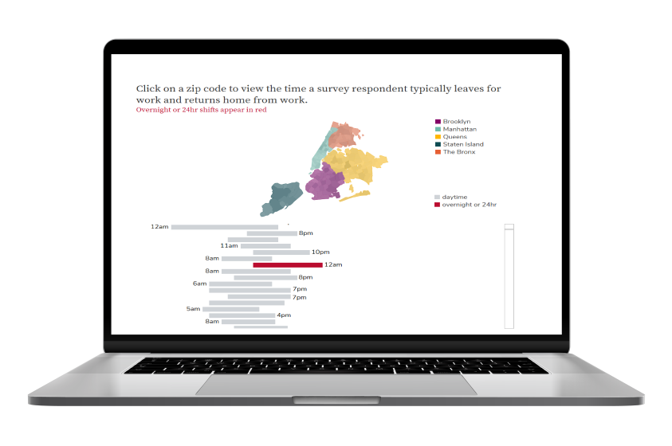

TABLEAU FOR RESEARCH
Welcome to Tableau for Research! This tutorial is designed to support multi-session workshops hosted by The Ohio State University Libraries Research Commons. It is intended to help the ABSOLUTE beginner, or anyone who is relatively new to Tableau to build the skills and confidence to apply Tableau to research projects.
Before we begin …
Download Tableau Desktop
Mastering data visualization takes time, patience and consistent practice. To complete the activities in this tutorial, you will need a copy of Tableau Desktop.

Students can obtain free access to the Public Edition of Tableau Desktop through Tableau’s Academic Programs. Both students and instructors are elibile for a full access to Tableau Desktop through the Tableau for Teaching program when the software is used for coursework. If your role at OSU does not involve teaching, please follow the university’s instructions for obtaining Tableau Desktop Access. Copies of Tableau Desktop are also installed on workstations in the Research Commons computer lab. You can access these machines remotely using the online PC reservation system.
For more details, see Tableau Desktop and Tableau Desktop Public Edition Feature Comparison.
What is data literacy?
Data literacy is a journey
Strengthening your ability to evaluate and work with data will empower you to use data more effectively and responsibly.
Data literacy defined
Data literacy is “the ability to read, work with, analyze, and argue with data.”
- Reading data: Understanding what data represents and how it reflects the world around us.
- Working with data: Creating, acquiring, cleaning, and managing datasets.
- Analyzing data: Filtering, sorting, aggregating, comparing, and analyzing data.
- Arguing with data: Using data to support a narrative that is intended to communicate some message or story to a particular audience. (Bhargava and D’Ignazio 2015)
Data literacy concepts and competencies are integrated throughout this tutorial to help you build strong skills in data visualization and storytelling. In addition to interpreting and evaluating data, we’ll explore data handling, data synthesis, ethical use of data, and best practices for presenting data effectively.
When looking at data collected by others - whether it is raw data or data published in an article - it is important to understand what the data means, how it was collected, and who collected it. You must critically evaluate each data source before you consider using data to support an argument. Approach your data with curiosity and some skepticism.
Use the DRAMA Framework to evaluate your data. (Primeau, n.d.)
DRAMA Framework
Date
Relevance
Accuracy
Motivation
Authority
What to expect
Each section in this tutorial introduces one or two data literacy concepts or chart selection tools, followed-by three to four hands-on lessons demonstrating how to apply these ideas in Tableau. The lessons guide you through each step, and are complemented by readings that highlight best practices for data visualization. The texts are available through The Ohio State University Libraries for faculty, students and staff, and include:

- by Jonathan Schwabish
- New York : Columbia University Press, 2021.

- by Stephanie Evergreen
- Thousand Oaks, California: SAGE Publications, 2020

- by Cole Nussbaumer Knaflic
- Hoboken, New Jersey: Wiley, 2015.
Since practice is one of the most effective ways to learn data visualization, each lesson also includes activites that encourage you to apply what you’ve learned to a dataset that is meaningful to you. The lesson then concludes with a reflection prompt, inviting you to consider the skills you’ve developed and how you might apply these skills to a future project.